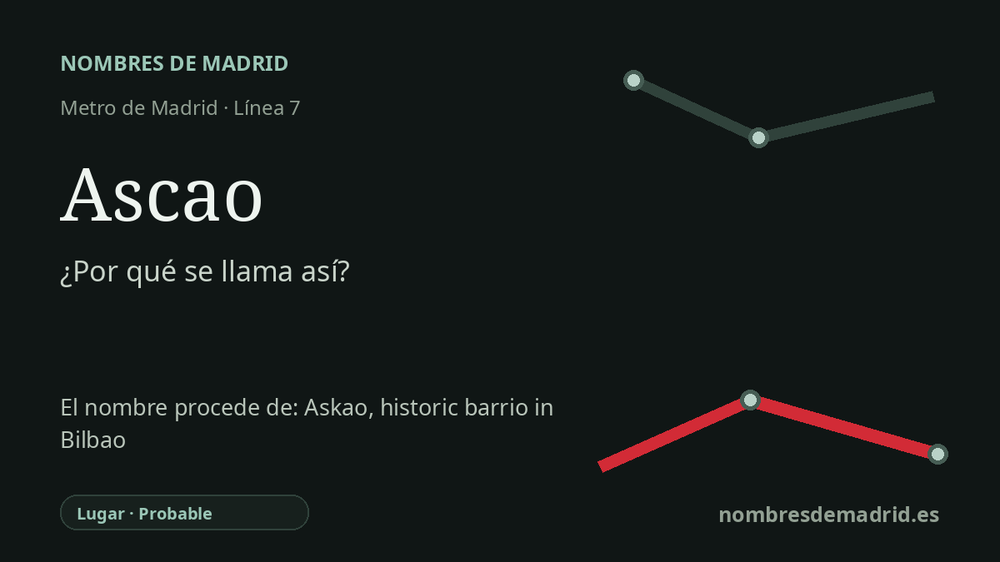

Publicado el · Investigación de Nombres de Madrid · Cómo verificamos cada origen · 9 fuentes consultadas
Respuesta rápida
La estación de Ascao toma su nombre de la calle de Ascao, en Pueblo Nuevo. El nombre de la calle remite a Askao, un antiguo topónimo bilbaíno documentado junto al entorno del convento de Santa Cruz e interpretado en euskera como aska-aho, 'boca del abrevadero'.
La historia del nombre
La estación de Ascao toma su nombre de la calle de Ascao, la vía situada sobre la parada de la línea 7 en Ciudad Lineal. El Consorcio Regional de Transportes localiza el acceso en la calle de Ascao, 29, y el Callejero histórico oficial registra la calle desde el 10 de noviembre de 1950 entre la calle del Puerto de Canfranc y el Camino de Valderribas. El nombre de la estación no describe directamente el lugar ferroviario: traslada al plano del Metro un nombre viario local.
El nombre anterior que hay detrás de esa calle madrileña apunta al norte, a Bilbao. Las fuentes de toponimia bilbaína describen Askao o Ascao como un antiguo topónimo cercano al convento de Santa Cruz, vinculado a un arroyo, a solares próximos y a los antiguos jardines de Ascao. Es un topónimo histórico bilbaíno, no un municipio actual ni una simple etiqueta de barrio moderno.
La explicación vasca más citada deriva Askao de aska-aho, normalmente interpretado como "boca del abrevadero" o abertura de una pila. Esa lectura aparece en trabajos de onomástica relacionados con Alfonso Irigoien y cuenta con apoyo documental de Euskaltzaindia, que trata Askao como un topónimo bilbaíno de larga duración. No consta el acuerdo madrileño concreto que dio nombre a la calle; la cadena probable es estación, calle de Ascao y, en último término, el Askao o Ascao de Bilbao.
El callejero del entorno madrileño refuerza esa lectura. La zona de Pueblo Nuevo y del llamado Barrio de Bilbao reúne varios nombres conectados con Bilbao o con la geografía vizcaína, como Arriaga, Portugalete, Santurce, Achuri y Recalde. Ascao encaja en ese conjunto, aunque no todos esos nombres sean municipios: algunos, como Ascao/Askao y Achuri/Atxuri, son topónimos bilbaínos antiguos.
La estación de Metro abrió con el primer tramo de la línea 7 en julio de 1974, cuando la línea empezó a funcionar entre Pueblo Nuevo y Las Musas. Como el referente inmediato de la estación está claro, pero no se ha podido consultar todavía el expediente municipal de denominación de la calle, el nivel más adecuado es probable. Una mejora futura debería citar el acuerdo del Ayuntamiento de Madrid que asignó el nombre a la calle de Ascao.